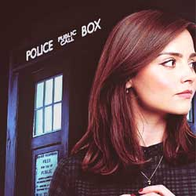

| Home The Doctors The Companions The Villains Show History |
Clara Oswald Clara Oswald is a fictional character created by Steven Moffat and portrayed by Jenna Coleman in the long-running British science fiction television series Doctor Who. First appearing in the show's seventh series, Clara serves as a companion of the eleventh and twelfth incarnations of the alien time traveller known as the Doctor(portrayed by Matt Smith and Peter Capaldi). Clara is presented to the audience during the first half of the seventh series as three distinct, though similarly named, people living in different eras of time. The first two incarnations, Oswin Oswald and Clara Oswin Oswald, each die during the episode in which they appear. The third incarnation becomes the Doctor's companion, travelling with him for the remainder of the series as he tries to uncover the mystery of her multiple lives. The mystery is later resolved in "The Name of the Doctor". |
Brendan Davey |
Ann Marie Skjold |
Content derived from the Doctor Who Wikipedia |